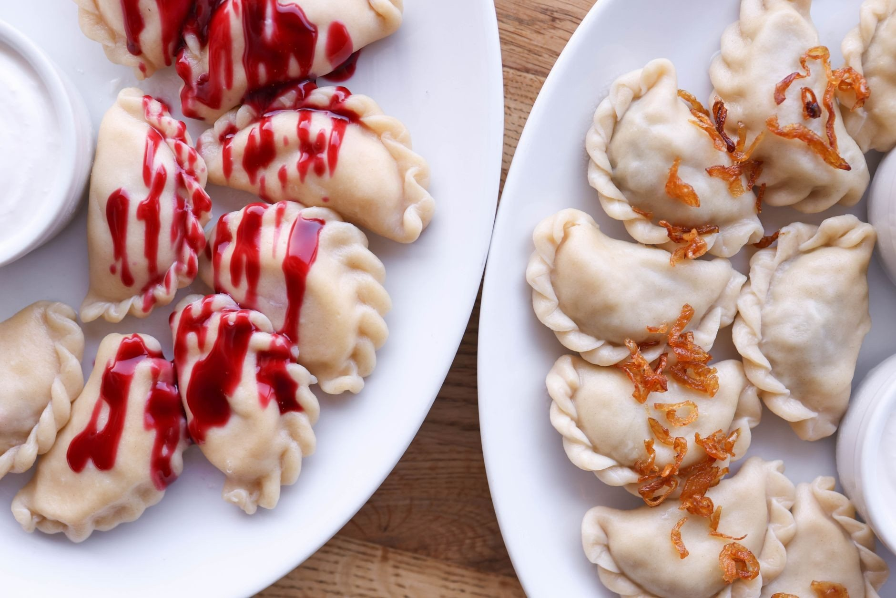
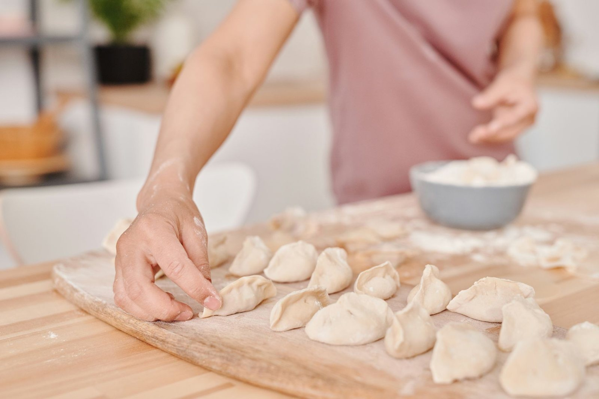
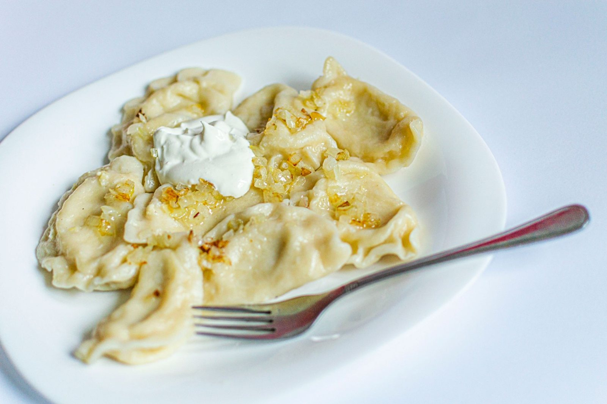
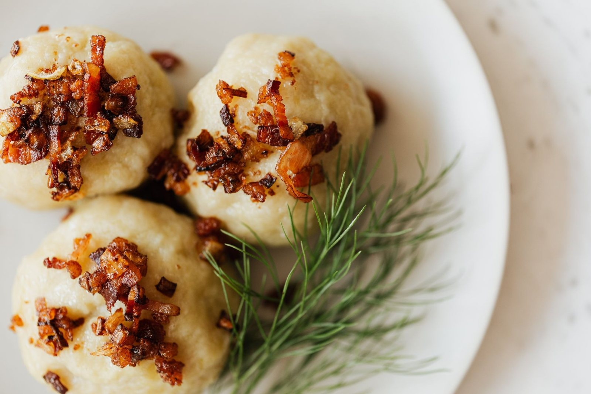
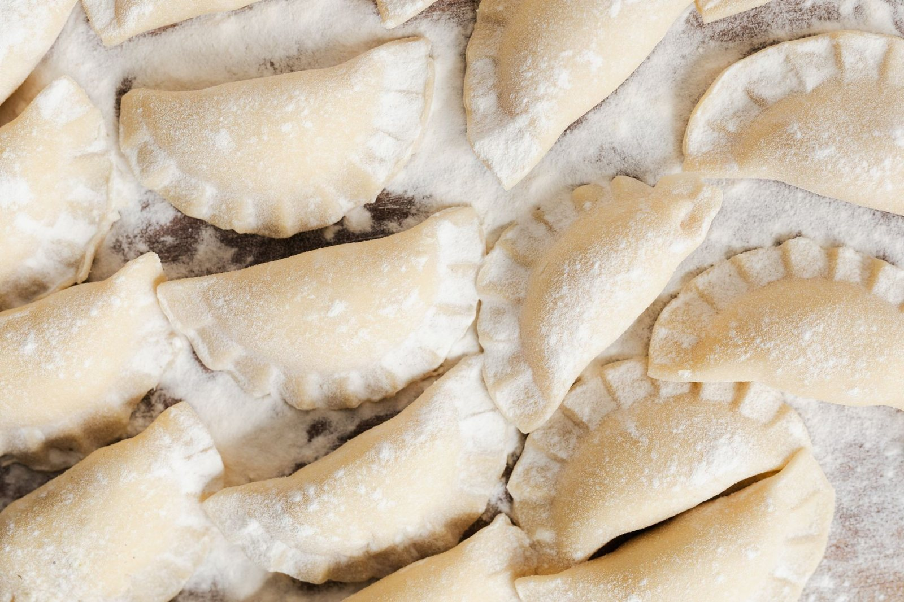
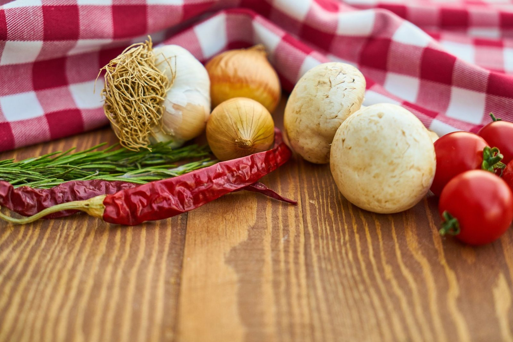
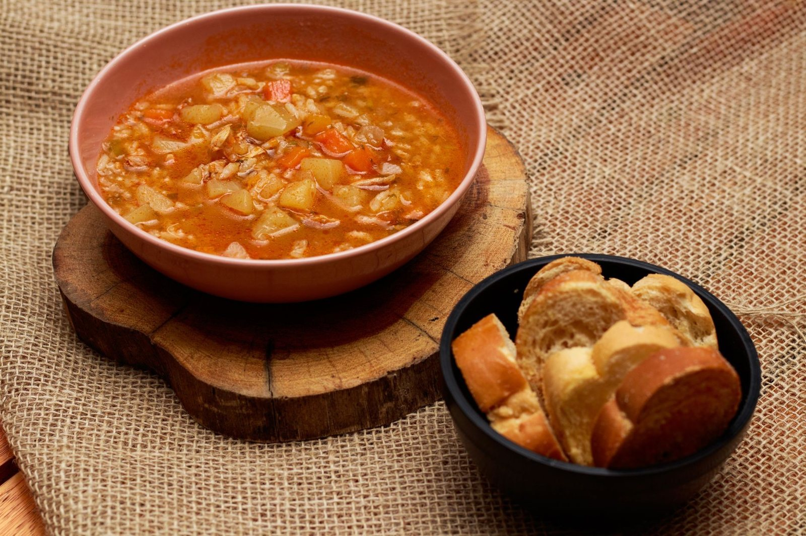

Bar Pierożek „ABIS”

Bar Pierożek „ABIS” to mały bar z pierogami, w którym ciasto wałkuje się ręcznie, a obiady gotuje codziennie od rana. Stawiamy na to, co znamy najlepiej - prostą, dobrą, polską kuchnię.
Gotujemy ze świeżych składników i podajemy to, co sami lubimy jeść - bez półproduktów i sztucznych dodatków. Lubimy, gdy goście wracają po swoje ulubione pierogi i zostają na chwilę dłużej.
Poznaj nas →Kilka naszych pierogów, dań i tego, co dzieje się w kuchni. Najlepiej jednak spróbować na miejscu.





Pn-Pt 9:00-18:00 · Sob 9:00-15:00 · Niedziela nieczynne. Najlepiej zadzwoń, by zapytać, co dziś gotujemy: +48 504 842 269.
Wpadnij na obiad albo zadzwoń i zapytaj, co dziś gotujemy.